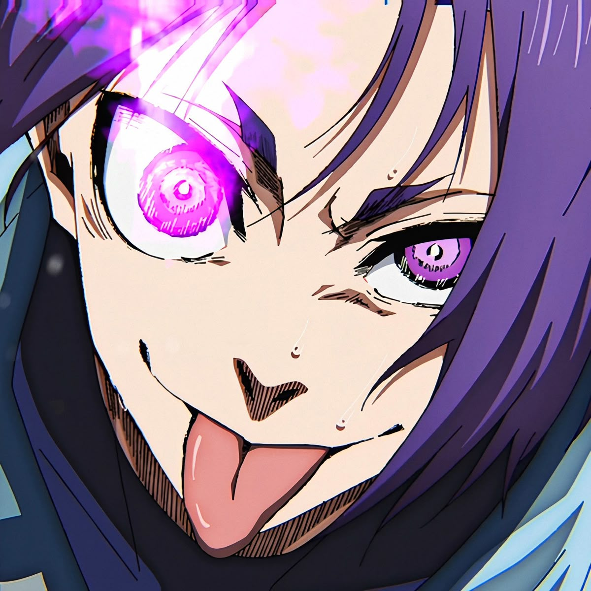
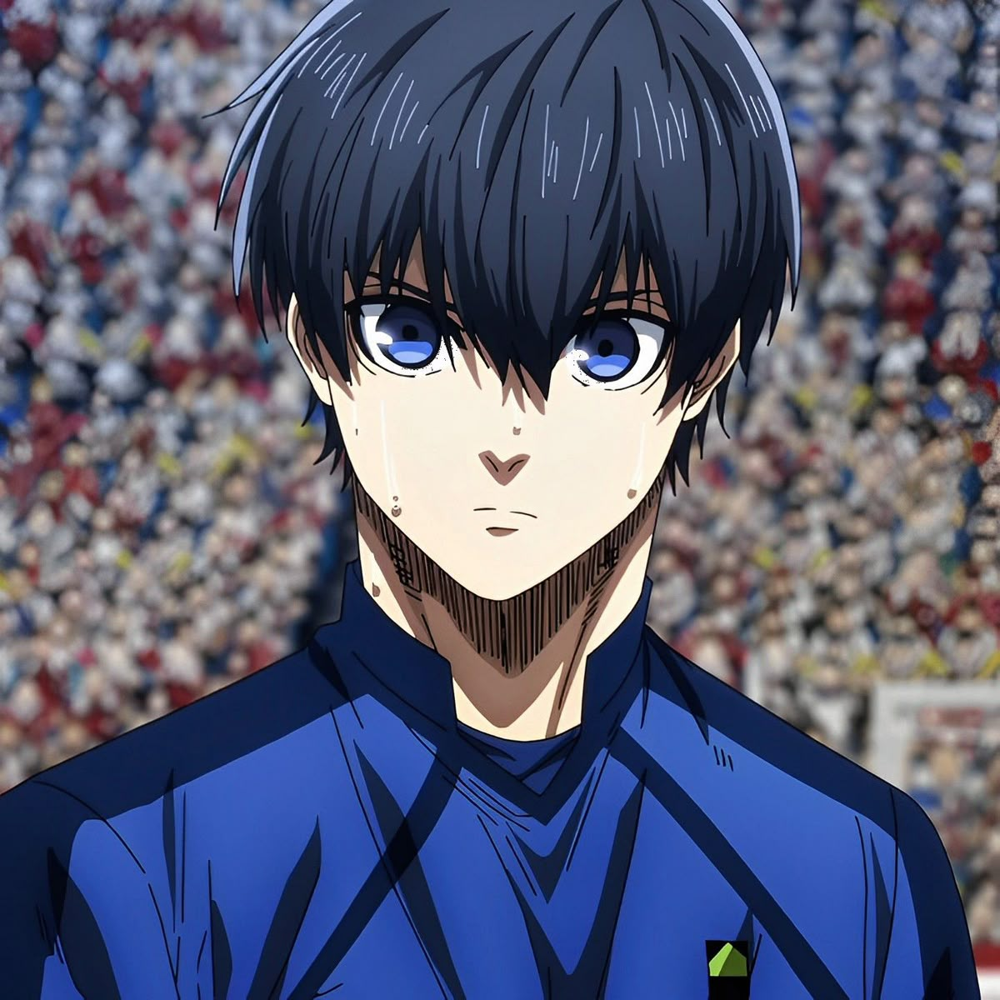

BLUE LOCK PROJECT
Tabito Karasu
Edad: 18

Reo Mikage U20
Edición de Blue Lock Eleven vs Sub 20 de Japón Estilo y Adaptación del Camaleón de Reo Mikage Legendario (Pasiva de Estilo – Pase) Eres un jugador nacido para adaptarse al entorno que te rodea. Tu talento radica en la versatilidad absoluta, capaz de ocupar cualquier zona del campo con total soltura, analizando cada jugada con tu conciencia espacial y traduciéndose en decisiones efectivas que elevan la fluidez del equipo. No importa si es defensa, centrocampista o delantero, todo se te da bien. Gracias a tu visión de campo avanzada y lectura del juego, tus estadísticas base se ven potenciadas por una conciencia espacial otorgando un aumento pasivo de +5 puntos en todas tus estadísticas. Tu control del juego te permite distribuir y desequilibrar con precisión, por lo que Pase y Regate se ven aumentados en +11 puntos inicialmente. Tiro, Defensa, Físico y Velocidad se ven aumentados en +8 puntos. Como efecto acumulable, cada vez que venzas en un duelo (con o sin ruleta), Pase y Regate aumentan en +6 puntos hasta 3 veces. Además, reduces -13 puntos en defensa enemiga en encuentros de Pase vs Defensa y Regate vs Defensa una vez ganes la acumulable máximo. Tus pases pueden tomar curvatura libre sin alterar su precisión, y al ejecutar pases a larga distancia, solo sufres un 35% de reducción por distancia, a diferencia del 50% convencional. Tienes la habilidad de copiar cualquier jugada de otro jugador dentro del campo (ya sea una jugada de Genio, de alto rendimiento o estilo único) y reproducirla perfectamente, ganando +5 puntos en la estadística central que la jugada representa (ya sea Pase, Tiro, Defensa, Regate, Físico o Velocidad). Este aumento permanece indefinidamente, pero no puedes volver a replicar una jugada para seguir acumulando la misma estadística. Sin embargo, puedes repetir el proceso en otra categoría distinta. No puedes copiar pasivas ni jugadas exclusivas de jugadores del New Gen Eleven; si copias una de Velocidad o Físico arriesgas lesión con una ruleta. Puedes adaptarte al estilo ofensivo o técnico de jugadores como Shidou, Nagi, Yukimiya u Oliver Aiku. Camaleón Con esta habilidad puedes copiar y utilizar una pasiva activa dentro del campo (ya sea de un aliado o enemigo), manteniéndola solo durante la jugada. Puedes copiar todo tipo de pasivas. Si una pasiva contiene características de Físico o Velocidad con riesgo de lesión, la ruleta se ajusta automáticamente a 40% de no lesión y 60% de lesión. Ejecución: Debes indicar qué pasiva copias, mencionarlo como Camaleón y aplicarlo en la jugada. No tiene cooldown: respeta el cooldown de la pasiva copiada. Gyro Shot – Estilo del Camaleón Un disparo con efecto que cambia de trayectoria y aparenta irse fuera, pero desciende repentinamente entrando en el arco. Reduce -8 la estadística del portero. Si alguien interviene, es forzado a Tiro vs Defensa con -20% en su estadística. Ejecución: Debes mencionar Gyro Shot – Estilo del Camaleón y esperar 7 turnos globales de cooldown. Control Absorbente x Despeje Giratorio – Estilo del Camaleón Convierte rechaces, pases imperfectos o posiciones incómodas en oportunidades mediante un giro técnico que transforma la acción en control o pase preciso. Aumenta +6 Pase al usarla, acumulable 2 veces. El pase puede tomar efecto curvado o flotante desde 15 m. Si tu equipo recupera el balón, ganan +5 en Tiro, Pase y Regate en esa jugada. Los defensores que intenten interceptar se ven forzados a un duelo con -20% en Defensa vs Pase. Ejecución: Debes narrar cómo controlás el balón desde un ángulo incómodo y usar la técnica. Menciona el uso. Cooldown de 7 turnos globales. Defensa Asfixiante – Estilo Camaleón Ejecutas un marcaje que cierra espacios y asfixia al atacante sin necesidad de contacto directo. Obligas a Regate vs Defensa, Tiro vs Defensa o Defensa vs Pase según corresponda. Obtienes +12 en Defensa y +10 en Físico mientras mantienes la marca. Si el rival falla su acción, recibe -20 en la estadística usada. Si pierde la ruleta, obtienes +6 en Pase o Regate (a elección) en tu siguiente jugada ofensiva. Ejecución: Debes narrar el marcaje pegado, constante, cerrando líneas y mencionar Defensa Asfixiante – Estilo Camaleón. Cooldown de 7 turnos. Movimiento de flujo Dragon Drive Shot – Estilo del Camaleón Un disparo salvaje y explosivo que replica la brutalidad ofensiva de una bestia. Aumenta +10 Tiro al activarlo. Fuerza a duelo Tiro vs Defensa y reduce la Defensa del rival en -25%. Ejecución: Debes usarlo en un balón rechazado o aéreo y mencionar Tiro Dragón – Estilo del Camaleón. Cooldown de 8 turnos.

Isagi Yoichi U20
EDICION PARTIDO SUB-20 EL CORAZÓN LATENTE DE BLUE LOCK LEGENDARIO Has destrozado el sueño de muchos jugadores para llegar a dónde estás hoy en día. Dentro del proyecto Blue Lock solo triunfa el más egoísta y ese eres tú. Tras sobrevivir a ese infierno lograste situarte dentro del equipo inicial por lo que tus habilidades están al nivel necesario para resaltar sobre el montón. Tu mejor habilidad es tu cerebro y conciencia superior por lo que recibes +5 puntos en todas tus estadísticas por ello. Como delantero tu mejor arma es tu disparo directo que no se tuerce ante ningún obstáculo y va a parar al punto exacto al que apuntas, sumando +12 de tiro de forma inicial, pero si te encuentras a 15 metros de portería sumas +10 puntos extras a la hora de rematar. Tu rango máximo de tiro es de 19 metros antes de comenzar a verte afectado por las reducciones correspondientes. Tu coordinación en equipo es de las mejores del proyecto pero aún así tus habilidades no te siguen el ritmo por lo que tu pase aumenta +10 de forma sólida. Tu físico no es la gran cosa, tu velocidad tampoco lo es, por lo que ambas estadísticas aumentan solamente +7 puntos. Tu regate, aunque extraño de ver por el nivel de los adversarios, suma +4 puntos a la estadística. Como detalle extra puedes predecir a jugadores impredecibles después de 9 post globales gracias a tu cabeza que nunca deja de maquinar. MI TIRO DIRECTO Te niegas a ceder a las circunstancias. Defensas bloqueando tu trayectoria o compañeros pidiendo el pase no cambian tu decisión. Disparas reduciendo -25% la defensa de quienes interfieran en tu tiro, mientras tú sumas +10 de tiro estés o no dentro de tu zona dorada. Si logras convertir esta oportunidad obtienes +10 puntos permanentes en tiro durante el resto del partido. Para usar esta habilidad debe mencionarse "MI TIRO DIRECTO". Tiene un cooldown de 4 turnos. DESAPARECIDO Robaste o adaptaste esta habilidad de un jugador que no destacaba en nada, pero ganaba espaldas con facilidad. Observando el campo visual del oponente puedes salir de su visión para tomar su espalda de forma inmediata, sin que pueda retroceder por el resto de la jugada. Esta habilidad posee 5 turnos de cooldown propios. Se usa mencionando "Desaparecido" y describiendo cómo tomas su espalda. SIÉNTELO, FLUYE CONMIGO Puedes influenciar psicológicamente a tus compañeros posicionándote siempre como la mejor opción para recibir un pase. Tu ego dicta el rumbo del partido creando jugadas instintivas. Ganas +4 puntos en todas tus estadísticas durante la jugada. Tiene 5 turnos de cooldown. Debe hacerse referencia a "Sientelo, fluye conmigo" durante el post. METAVISION IMPERFECTA × FACTOR SUERTE Obtienes durante un segundo una lucidez total del partido. Puedes anticiparte a cualquier balón suelto y obtenerlo sin ruleta. Ganas +7 puntos en todas tus estadísticas durante la jugada. Solo puede usarse una vez por partido y no es utilizable hasta que hayan pasado 9 post globales.